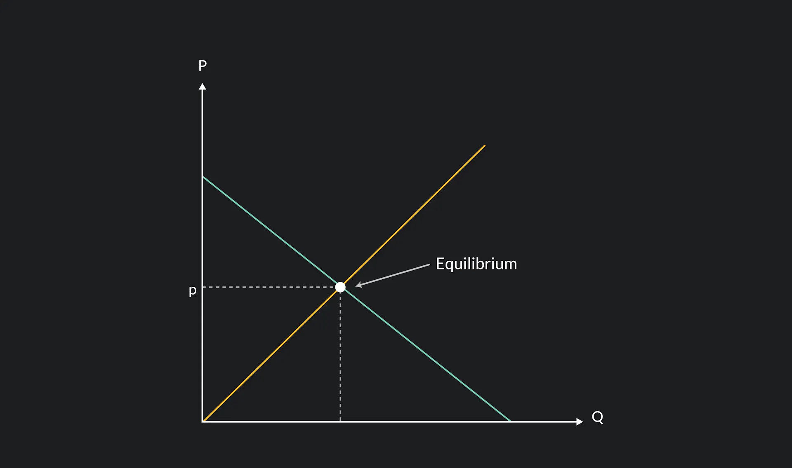

The
demand curve is a graphical representation of the relationship between the price of a good or service and the quantity demanded within a specified time frame. Here are the key points:
Graphical representation
- The demand curve typically appears as a line graph.
- The price is plotted on the vertical axis, while the quantity demanded is on the horizontal axis.
- As the price changes, the corresponding quantity demanded shifts along the curve.
Law of Demand
- The downward slope of the demand curve reflects the law of demand
- According to this law, as the price of a commodity increases, the quantity demanded decreases, assuming all other factors remain constant.
- Conversely, when the price decreases, demand tends to rise.
Price Elasticity of Demand
- The responsiveness of demand to price changes varies across different goods.
- Some goods exhibit elastic demand, where a small price change leads to a proportionally larger change in quantity demanded.
- Other goods have inelastic demand, meaning price changes have a relatively smaller impact on quantity demanded.
Shifts in Demand Curve
- Factors beyond price and quantity can shift the demand curve.
- Examples include changes in consumer income, preferences, population, and related goods (substitutes or complements).
- Giffen goods (where demand increases with price) and Veblen goods (where higher prices enhance desirability) are exceptions to the typical relationship between price and demand.
The
supply curve is a graphical representation of the relationship between price and quantity supplied.
It slopes upward from left to right, reflecting the positive correlation between price and quantity.The x-axis represents the quantity supplied, and the y-axis represents the price.A shift along the supply curve occurs when the price changes, leading to a change in the quantity supplied.
Factors Influencing Supply
Several factors can shift the supply curve:
- Production Costs: Changes in input costs (e.g., labor, raw materials) affect supply.
- Technology: Innovations can increase production efficiency.
- Number of Firms: More firms entering the market can boost supply.
- Taxes and Subsidies: Taxes reduce supply, while subsidies increase it.
- Weather and Natural Disasters: These can impact agricultural supply.
- Expectations: Producers future expectations influence supply decisions.
Market Equilibrium
Economic equilibrium is a situation in which economic forces such as supply and demand are balanced and in the absence of external influences the values of economic variables will not change.
To graph for market equilibrium, plot both the supply curve and the demand curve based on a list of prices and quantities, and the point at which the curves intersect and prices meet is the equilibrium.
